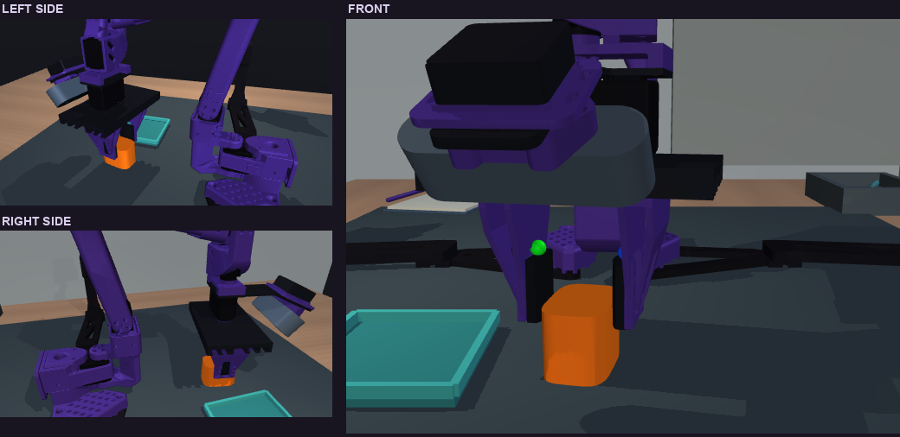
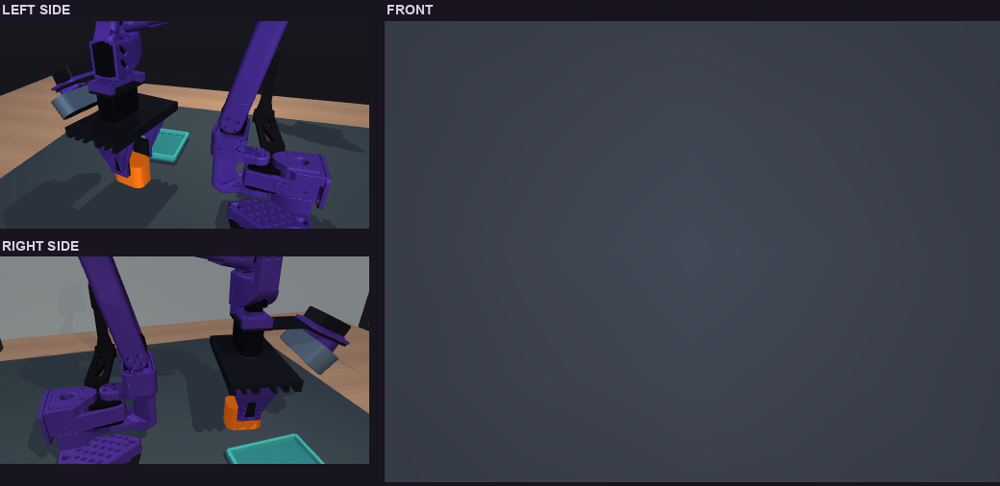
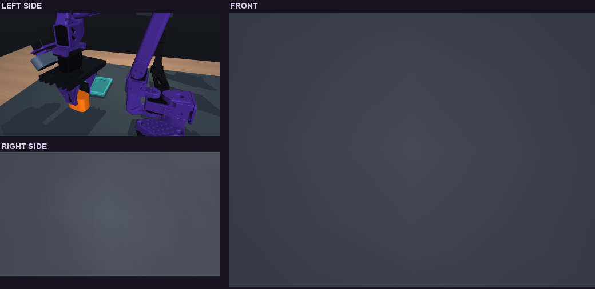
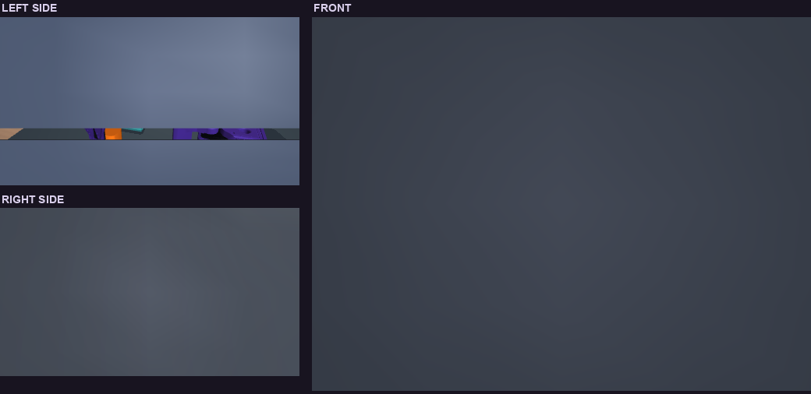
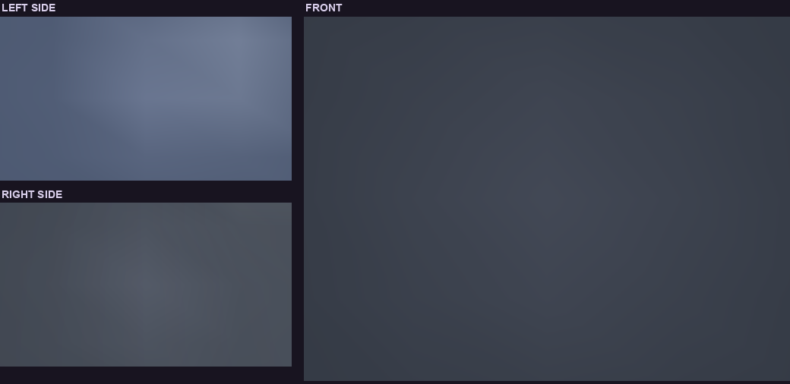

Position correction
Recenter the jaws when the probe misses or makes contact on one side.
SO-ARM101 R7 · Research in progress
A short lift can fail because the jaws missed the center or because the part slipped. We tested whether tactile feedback helps the robot decide how to regrasp when its cameras lose sight of the contact.
SO-ARM101 · Two 77-point PaXini pads
Compare the pad maps below, then replay a case to see how contact changes through the lift.
● Compression Fz↗ Surface force Fx / Fy⊕ Center of pressure
Paired evaluation
Each pair starts from the same object pose and receives the same camera and arm observations. The tactile run also receives the force history from both jaws.
Estimate the object pose from wrist RGB-D. Apply the camera occlusion after this scan.
Close the gripper and attempt a short lift. Record side RGB, jaw gap, and gripper height.
GPT-6.2 Astra at xhigh chooses position correction or grip reinforcement.
Execute the selected action with the same controller. Count success once the object rests in the tray and the gripper has withdrawn.
Elapsed time includes model inference. Videos follow simulation time.
Recenter the jaws when the probe misses or makes contact on one side.
Close the jaws further at the same location when the part slips during the lift.
Early controls
We tested both scripted recovery motions on the same 50 g shell across 32 conditions. After a failed first grasp, both motions started from the same state.
| Initial failure | Position correction | Grip reinforcement |
|---|---|---|
| Off-center | 14/14 | 5/14 |
| Low friction | 0/16 | 12/16 |
Success required at least 8 mm of lift, tilt within 20°, and no table contact during the last 0.24 s. The scripted position correction used the simulator's object pose.
Early test setup and reproduction codeRecovery iteration 1 · Off-center cylinder
In the first paired recovery test, each condition placed 9 of 12 objects.
In Trial 6, the cylinder appeared between the jaws in the side images. Astra chose grip reinforcement even though both pads read 0 N.
We added the full closure history and measured jaw gap. Both pads stayed at 0 N across all 24 samples, and the jaws closed to the commanded 30 mm. Astra then chose position correction.
10/12 · 9/12Placed with / without PaXini
Recovery iteration 2 · Low-friction cylinders
Astra chose grip reinforcement in both conditions. The previous motion descended with closed jaws and pushed the dropped cylinder out of position.
We opened the jaws before descending, closed them at the original target, then lifted the part 8 mm before the full lift. Both cylinders recovered.
12/12 · 11/12Placed with / without PaXini
Recovery iteration 3 · Vision-only recovery
We added a front RGB-D camera and jaw markers in MuJoCo. Wrist depth located the object outline, and the front camera located the jaw center in the same coordinate frame.
In Trial 6, the jaw center lay 8.37 mm outside the outline. With that measurement, Astra corrected the grasp and placed the cylinder without tactile input. The calibration yielded a measurement in 11 of 12 trials.
12/12 · 12/12Placed with / without PaXini
12 matched pairs · New shapes and poses
After both conditions reached 12/12 on the original layouts, we tried hexagonal and oval prisms in four new layouts. We kept the initial RGB-D scan and changed what the cameras could see at contact.
| Camera visibility | With PaXini | Without PaXini |
|---|---|---|
| Clear | 4/4 | 4/4 |
| Front view blocked | 4/4 | 4/4 |
| Workpiece also obscured | 4/4 | 2/4 |
Both failures without tactile input were off-center grasps.
30-pair evaluation · One matched layout
These are recorded camera inputs at jaw closure. Select an image to open it at its original pixel size.





All conditions keep the initial wrist RGB-D scan, jaw gap, and gripper height measurements.
30 matched pairs · Six layouts × five camera conditions
Three new shapes were tested with both off-center and low-friction grasps. The first difference in placement appeared when the front camera was blocked, even with both side views intact.
Off-center grasps. 15/15 with PaXini and 9/15 without. On the six differing pairs, one-sided contact supported a position correction.
Low-friction grasps. Both conditions placed 15/15 and chose grip reinforcement.
| Camera visibility | Side RGB pixels | Placed | Median elapsed |
|---|---|---|---|
| Clear | 100% | 6/6·6/6 | 8.34 s·8.94 s |
| Front blocked | 100% | 6/6·5/6 | 8.85 s·15.57 s |
| One side | 52.7% | 6/6·5/6 | 9.21 s·16.95 s |
| Narrow slit | 13.6% | 6/6·4/6 | 8.56 s·21.64 s |
| All probe views blocked | 0% | 6/6·4/6 | 9.02 s·17.11 s |
| Overall | — | 30/30·24/30 | 8.82 s·17.16 s |
Side RGB pixels are the median fraction of workpiece pixels retained at pinch and hold relative to each layout's clear view. Front-camera alignment was measurable in 4 of 6 clear-view trials.
Watch the matched trials →Recorded comparisons
Both runs share the same simulation clock. Each replay shows the selected action, placement outcome, measured elapsed time, and the side RGB frames at closure.
30 pairs
| Experiment | With PaXini | Without PaXini |
|---|---|---|
| First paired runs | 9/12 · 9.53 s | 9/12 · 23.12 s |
| Closure contact history | 10/12 · 8.10 s | 9/12 · 22.50 s |
| Open-jaw descent | 12/12 · 8.27 s | 11/12 · 19.06 s |
| RGB-D alignment | 12/12 · 8.25 s | 12/12 · 8.35 s |
| Occlusion pilot | 12/12 · 8.39 s | 10/12 · 12.65 s |
| Five-level occlusion | 30/30 · 8.82 s | 24/30 · 17.16 s |
The final experiment reused six physical layouts across camera conditions in MuJoCo. Occlusion began after the initial scan. Model call latency varied across trials.
The higher-resolution replays use the recorded model choices and match the original motion traces and outcomes. Timing tables use the original trial logs. We retained the original record of a rendering interruption and reran that trial with the same input.